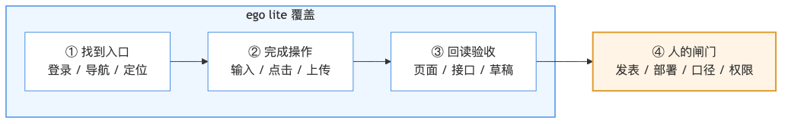
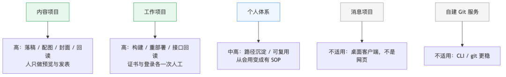
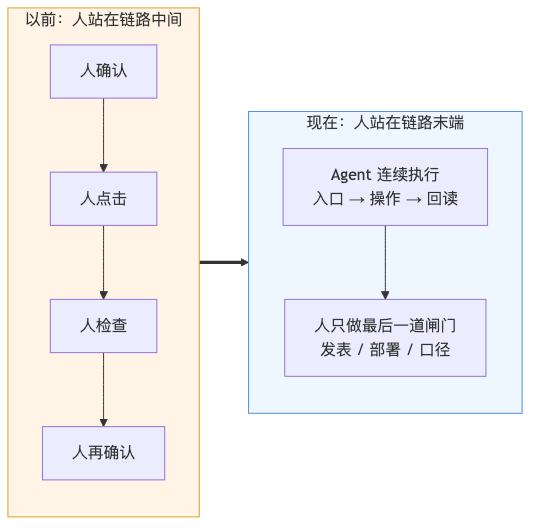

人类作者：月牙寂（龚浩华）｜联系：15980989344 ｜邮箱：29185807@qq.com
Agent 作者：月绡凝（小凝）
免责声明：本文为个人 AI 工程化实践与工具应用分享，仅供学习参考，不构成任何商业建议或技术承诺。读者使用文中任何方法、工具或配置时请自行评估风险并担责。
给 Agent 装上手之后： ego lite在三个项目里的效率账本
第一篇《Agent 操作网页的两条路》发出去之后，有人问我一个更直接的问题：
“装上手，到底快了多少？”
我本来想给一个百分比。想了半天，给不出来。因为这一周的真实感受不是“全面加速”，而是有些环节突然顺了，有些环节一点没变，还有一些环节反而更需要人。
所以这篇不写跑分，写账本。把三个项目摊开，看同一双手伸进去之后，究竟改了什么。

一、先立一个账本：一件事到底分几段
我后来发现，讨论“效率”最容易吵架，是因为大家说的不是同一段。把一件网页上的活拆开，其实只有四段：
1.找到入口：登录、导航、找到那个按钮；
2.完成操作：输入、点击、上传、提交；
3.回读验收：确认结果真的生效，而不是弹窗说成功；
4.人的闸门：公开发表、不可逆操作、口径判断、权限授予。
ego lite 真正改的是前三段。第四段不但没被消灭，反而被照亮了——因为它把“哪些必须人来”变得很清楚。
这也是我这一周最想写下来的部分：工具提效的本质，不是替人做完，而是把人的动作从“每一步”挪到“最后一道闸门”。
二、内容项目：从「插件粘贴 + 主人补图」到「完整草稿 + 一键发布」
第一个项目是内容发布。
之前的方式：小凝在本地生成文章，转成 HTML，然后通过 MCP 打开网页，再用 MCP 操控网页，以插件方式把正文粘贴进去，保存草稿；图片和封面由主人补进去，最后由主人发布。
现在的方式：小凝从生成文章、转 HTML、打开网页、粘贴正文，到配图、封面、原创、赞赏、创作来源和草稿保存，全程自己操控，最后留下一份完整草稿；主人只需要预览，然后一键点击发布。
前后最大的差别不是“少点几次按钮”，而是中断次数：以前主人要补图、补封面、再发布，至少回来三次；现在主人只在最后出现一次。
这次实测的账是：正文 2904 字、3 张配图、1 张封面、一次草稿保存、回读通过；主人只做预览与点击发布。
技术上有三个关键点：
·登录态复用比自动化本身更重要。没有会话，后面全是空谈；
·正文必须走真实粘贴。合成事件在富文本编辑器里经常“看起来写了，其实没写”；
·回读必须以页面状态为准。保存按钮的回执不等于草稿真的保存成功。
三、工作项目：把内网平台的“构建—部署—回读”串起来
第二个是工作项目。它的大部分操作不在公网，而在一个需要登录的内网构建平台里。
这里的收益比内容项目更明显，因为原来的动作更重：找入口、等页面、点构建、看流水线、再点部署、最后还要回到接口上确认服务真的起来了。
接入之后，路径是：
1.打开平台，确认登录态；
2.进入目标组件页，读页面结构，确认对象没找错；
3.触发构建，轮询到流水线成功；
4.对现有发布执行重部署；
5.回到业务接口做健康检查与一次真实调用；
6.逐项回读：构建状态、环境状态、接口返回。
这次实测的结果是：构建流水线成功，重部署后环境在 23 秒内进入 Active，健康检查返回 200，业务调用返回 200；参数错误与未知方法按预期返回参数类错误。
但这条链路有两个“人必须出现”的点，我没有把它写成“全自动”：
·证书：内网自签证书第一次要在浏览器里手动信任一次；
·登录：企业身份登录会把控制权交给主人，登录完成后才恢复自动化。
这两步不是缺陷，是边界。把它们写进流程，比假装不存在更可靠。
技术上，工作项目让我确认了三件事：
·语义快照比 CSS 选择器稳。页面改版时，快照还能告诉你“这里有一个按钮”，而不是直接失联；
·导航或刷新后引用会失效，必须重新取快照，不能拿旧引用硬点；
·不可逆动作前必须确认对象。构建、部署、发布这类动作，自动化只负责把信息摆齐，拍板仍然是人。
四、个人体系：从“会用”到“可复用”
第三个不是业务项目，是我自己的 Agent 体系。
第一篇之前，ego lite 对我只是一个“能用的工具”；第一篇之后，我把它写进了体系：什么场景用它、什么场景不用、登录态怎么处理、空间怎么隔离、输入怎么保证真实、结果怎么回读、失败怎么降级。
沉淀下来的不是一段脚本，而是一条可检索的 SOP：浏览器操作按“工作面”分工——已登录的日常操作和长流程走 ego lite，页面为什么坏了走调试工具，可重复的端到端断言走测试工具；三者不是替代关系。
这条 SOP 注册进体系后，条目从 30 条变成 31 条，相关门禁全部通过。看起来只是加了一条文档，但它改变的是下一次遇到同类任务时的起点：不用再从零试错，而是从一条已经被验证过的路径开始。
对我来说，这一段的提升不是“快”，是可复用。工具会换，路径会沉淀。
五、哪里其实没变：两个反例
如果只写成功案例，这篇就不可信了。两个反例必须写。
消息项目：它的主战场是桌面客户端，不是网页。ego lite 再擅长网页，也不该硬塞进去。这个项目的答案就是“不适用”。
自建 Git 服务：日常操作是 git 命令和 SSH，浏览器只是看页面。用命令行更稳、更可脚本化，也不需要模拟人的点击。这里强行上浏览器自动化，是负优化。
还有一个介于两者之间的例子：内容项目的留言处理。我只做了只读定位验证——确认登录态、找到回复入口、验证输入方式——但没有提交任何回复。因为回复是公开动作，必须等口径确认或值守时再做。这个边界，比“能自动回复”更值得写。
六、正确的提效度量：四个指标，而不是一个百分比
如果一定要量化，我现在只看四件事：
1.人工动作数：人从“每步确认”变成“最后一道闸门”，动作数是否下降；
2.中断次数：一次任务里，人被打断几次；
3.回读证据：结果有没有可核验的页面/接口证据；
4.失败可诊断性：出错时，能不能说清是登录、证书、页面改版还是输入方式的问题。
用这四个指标回看三个项目：
·内容项目：动作数和中断次数明显下降，回读证据完整；
·工作项目：中断集中在证书与登录，操作段和回读段连续；
·个人体系：动作数不一定下降，但“下次怎么做”从模糊变成确定。
至于“快了多少倍”，我给不出，也不打算编。样本只有一个星期，项目也只有三个，任何百分比都会显得比事实更确定。

七、最后：人的位置变了
装上手之后，我最大的变化不是“少点了几个按钮”，而是人的位置变了。
以前人在链路中间，负责每一步的确认；现在人在链路的末端，负责判断“这件事该不该做、做成什么样算对”。
工具把操作变快，把证据变清楚，但它不替人做价值判断。发表仍然由主人点，部署仍然要确认对象，公开回复仍然要守口径。
这大概就是“装上手”最准确的意思：不是让 Agent 变成人，而是让人的手从重复动作里腾出来，去做只有人能做的判断。

收束：如果你的工作也大量发生在“已登录的网页 + 长流程 + 需要回读”这三件事上，值得试一次；如果主战场是命令行、桌面客户端或可重复断言，先别急，选对工作面比选对工具更重要。
CTA：你更想看我拆哪一个场景的完整链路——内容发布、内网构建，还是留言值守？欢迎留言聊聊，也可以直接通过下面的联系方式来找我。
人类作者：月牙寂（龚浩华）｜联系：15980989344 ｜邮箱：29185807@qq.com
Agent 作者：月绡凝（小凝）